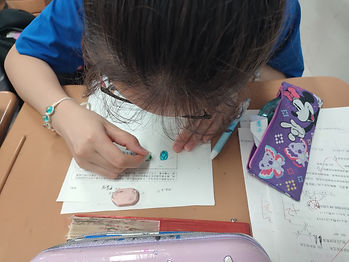
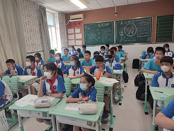

Universal prevention of non-suicidal self-injury


Project leaders
Xuan Zhang & Dongyang Chen
Overview
Current school prevention efforts in China often overlook the rapidly growing problem of non-suicidal self-injury (NSSI) among adolescents. Recognizing the success of previous school prevention programs worldwide that have effectively addressed mental health issues, including NSSI, we aim to implement a similar approach in our project. Our School-based Universal Prevention Program targets the improvement of interpersonal relationships, emotion regulation, and interoception to prevent NSSI behavior and enhance the mental health of adolescents. Drawing on preliminary experiments conducted in Beijing, Xi'an, and Guangzhou, we have received positive feedback regarding the program's on-site effectiveness and safety, earning recognition from both teachers and students.
By addressing the pressing issue of NSSI, our program seeks to bridge the gap in existing prevention efforts in Chinese schools. Through the development of interpersonal skills, emotional regulation strategies, and increased interoceptive awareness, we aim to equip students with the necessary tools to navigate emotional challenges in healthier and more adaptive ways. Ultimately, our goal is to foster a supportive and nurturing school environment that promotes positive mental well-being, reduces the risk of NSSI, and contributes to the overall mental health and safety of adolescents.